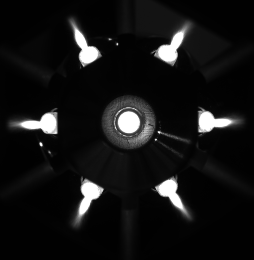
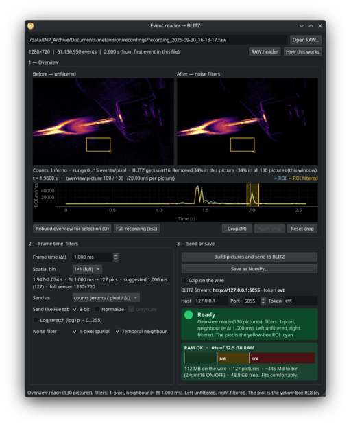

WETTER
The data can go straight in — or take the route it needs.




Raw Data Ocean
(Scientific) images in all their glory; from JPEG/TIFF via NumPy to ASCII and more
Curated route
Build a browsable SQL image database, then filter into the viewers
Viewers
The core pair — 2D inspection and N-dimensional exploration
Sidecars
When the data needs a converter

Event camera Streamer
Modular data ecosystem: two strong viewers, optional curated WOLKE route, and sidecars when the data needs them.
Scientific Imaging
Dataset Exploration
Knowledge Extraction
Image Analysis
Open Source